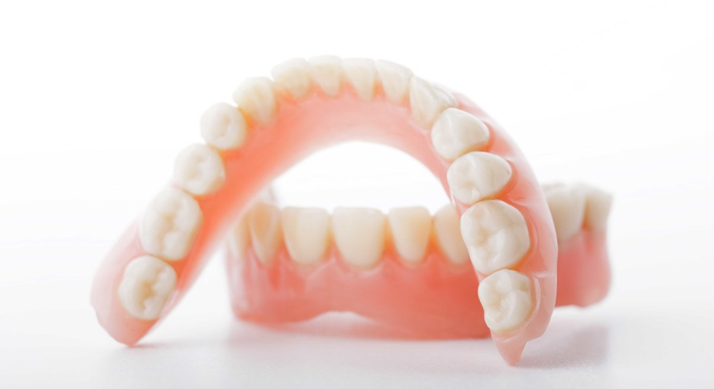

Мы с радостью на них ответим!
Памятка пациенту по пользованию съемным протезом

Вам изготовили съемный протез. Съемный протез опирается на десну и частично на собственные зубы (если они есть). Десна по своей природе не приспособлена для жевания, и, следовательно, требуется время для того, чтобы она смогла безболезненно воспринимать жевательную нагрузку. Кроме этого, десна не стабильна по форме, а это значит, что периодическая коррекция протеза является обязательным условием его качественного функционирования, удобства и долговечности.
В процессе пользования съемным протезом появляются точки наибольшей чувствительности; это связано с различной степенью податливости десны и неровным рельефом костной ткани челюсти под слизистой оболочкой. Чтобы их выявить, надо пользоваться протезом не менее суток и только потом прийти к врачу на коррекцию.
Вероятно, и после этого появятся новые болевые участки. Это нормальный процесс адаптации десны к протезу. Главное не ждать неделями в надежде, что все само притрется, это может привести к травмированию десны и усилению боли.
Учитывая все эти особенности, предлагаем выполнять следующие рекомендации.
Самым важным условием успешной адаптации к протезу, к новым ощущениям являются профилактические осмотры у врача и ВАШЕ ЖЕЛАНИЕ НАУЧИТЬСЯ пользоваться протезом.
В процессе привыкания к протезу разделяют несколько стадий, длительность которых зависит от сложности протеза и индивидуальных особенностей человека. В первую очередь, надо смириться с тем, что (не меньше недели) присутствие протеза будет ощущаться постоянно, вызывая дискомфорт (в той или иной степени), может измениться дикция. Чтобы эффективно преодолеть эти трудности, необходимо ежедневно проводить тренинг, т.е. говорить. Говорите как можно чаще. И к концу первых двух дней дикция начнет нормализовываться. Уже через неделю ощущение постороннего предмета не будет столь навязчивым.
ВАЖНО: чем меньше вы думаете о протезе, тем быстрее Вы забудете о его присутствии вовсе.
Как научиться есть
Любой съемный протез восстанавливает жевательную функцию не в полном объеме. Следовательно, в первые дни стремитесь избегать твердой пищи. Начинайте с более податливой пищи, переходите к более твердой., стараясь равномерно распределять пищу на правую и левую стороны, и с течением времени это будет получаться все лучше и лучше.
Уход со съемным протезом
Протез днем и ночью может быть во рту. Нет нужды по старинке класть его в стакан. Это не только бесполезно (современная пластмасса достаточно стабильна), но и порой может быть вредно. Так как во сне человек может сжимать челюсти сильнее, чем днем, создается повышенная нагрузка на остальные зубы и суставы. Чистить протез необходимо не реже 2-х раз в день, после еды зубной щеткой с пастой, ополаскивать в теплой проточной воде. Отдельно надо чистить свои зубы. Показателем хорошего ухода является отсутствие пищи и налета на протезе. Чтобы удалить пигментные пятна от кофе, сигарет и т.п., надо обратиться к врачу. Зубной техник восстановит необходимую полировку и блеск. Дополнительно можно использовать специальные чистящие средства, которые можно приобрести в аптеке.
В случае появления трещин, переломов и т.п., не пытайтесь починить протез сами (даже если это срочно). Скорее всего, это его испортит безвозвратно.
Не рекомендуется делать перерывы в ношении протеза более 1,5-2 недель, т.к. это может вновь привести к появлению первоначальных неприятных ощущений, может затруднить установку протеза точно на место. Если протезом не пользоваться более месяца – как правило, он уже не годен, и требуется изготовить новый.
Срок службы протеза будет во многом зависеть от качественного ухода и соблюдения письменных и устных рекомендаций Вашего врача.